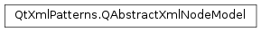

QAbstractXmlNodeModel¶
Synopsis¶
Functions¶
- def
createIndex(data) - def
createIndex(data, additionalData) - def
createIndex(pointer[, additionalData=0]) - def
sourceLocation(index)
Virtual functions¶
- def
attributes(element) - def
baseUri(ni) - def
compareOrder(ni1, ni2) - def
documentUri(ni) - def
elementById(NCName) - def
isDeepEqual(ni1, ni2) - def
kind(ni) - def
name(ni) - def
namespaceBindings(n) - def
namespaceForPrefix(ni, prefix) - def
nextFromSimpleAxis(axis, origin) - def
nodesByIdref(NCName) - def
root(n) - def
sendNamespaces(n, receiver) - def
stringValue(n) - def
typedValue(n)
Detailed Description¶
The
PySide2.QtXmlPatterns.QAbstractXmlNodeModelclass is an abstract base class for modeling non-XML data to look like XML forPySide2.QtXmlPatterns.QXmlQuery.The
PySide2.QtXmlPatterns.QAbstractXmlNodeModelspecifies the interface that a node model must implement for that node model be accessible to the query engine for processing XQuery queries. A node model represents data as a structure that can be queried as if the data were XML.The node model represented by a subclass of
PySide2.QtXmlPatterns.QAbstractXmlNodeModelis meant to be accessed by the Qt XML Patterns query engine. If the API seems a little strange in a few places, it is because the member functions are called by the query engine as it evaluates an XQuery . They aren’t meant to be used programatically.
Usage¶
PySide2.QtXmlPatterns.QAbstractXmlNodeModelbridges the gap between the arbitrary structure of the non-XML data to be queried and the well-defined structure of XML data understood byPySide2.QtXmlPatterns.QXmlQuery.Consider a chemistry application that reads the file
chemistryData, which contains non-XML data that represents a chemical structure composed of molecules and atoms. The application will query this chemistry data with an XQuery it reads from filequeryFile. We write a custom subclass ofPySide2.QtXmlPatterns.QAbstractXmlNodeModel(ChemistryNodeModel) that readschemistryDataand builds a data structure, perhaps composed of objects of our own classesmoleculeandatom. Clearly, this data structure is not XML. Our custom subclass will know how to traverse this non-XML structure and present it through the XPath Data Model interface.QFile queryFile(argv[1]); QFile chemistryData(argv[2]); QString moleculeName = argv[3]; QXmlQuery query; query.setQuery(&queryFile, QUrl::fromLocalFile(queryFile.fileName())); ChemistryNodeModel myNodeModel(query.namePool(), chemistryData); QXmlNodeModelIndex startNode = myNodeModel.nodeFor(moleculeName); query.bindVariable("queryRoot", startNode); QFile out; out.open(stdout, QIODevice::WriteOnly); QXmlSerializer serializer(query, &out); query.evaluateTo(&serializer);The application first creates an instance of
PySide2.QtXmlPatterns.QXmlQueryand callsPySide2.QtXmlPatterns.QXmlQuery.setQuery()to readqueryFilecontaining the XQuery we want to run. Then it creates an instance of our custom node model class,ChemistryNodeModel, which is a subclass ofPySide2.QtXmlPatterns.QAbstractXmlNodeModel. Its constructor is called with thename poolobtained from ourPySide2.QtXmlPatterns.QXmlQuery, and with thechemistryFilecontaining the structure of molecules and atoms to be queried. Thename poolis required because our custom node model has the member functionPySide2.QtXmlPatterns.QAbstractXmlNodeModel.name(), which returns thenameof any node in the model. Thequeryand the custom node model must use the same name pool for constructing thesenames. The constructor would then readchemistryFileand build the custom node model structure.To connect the
queryto the custom node model, we must bind a variable name used in the query to a node in the model. The variable can then be used in the query as a starting node. First, anindexfor the desired starting node is retrieved by callingQAbstractXmlNodeModel.createIndex(). Then the index is bound to a variable name, in this casequeryRoot, by passing the name and the index toQXmlQuery.bindVariable(). The query can then use a variable reference$queryRootto refer to the starting node. Note that if thequeryuses multiple variable references, a call toQXmlQuery.bindVariable()is required to bind each different variable name to a node in the model.The query is executed when the application calls one of the
PySide2.QtXmlPatterns.QXmlQueryevaluation functions. The application usesQXmlQuery.evaluateTo(QAbstractXmlReceiver *), because it then uses aserializerto out the query result as XML tostdout. We could have usedQXmlQuery.evaluateTo(PySide2.QtXmlPatterns.QXmlResultItems*) to get a list of result items, orQXmlQuery.evaluateTo(PySide2.QtCore.QStringList*) if the query evaluated to a sequence ofxs:stringvalues.During query execution, the engine iterates over the node model using
PySide2.QtXmlPatterns.QAbstractXmlNodeModel.nextFromSimpleAxis()to get theindexof the next node to be visited. The engine can get the name of a node by callingPySide2.QtXmlPatterns.QAbstractXmlNodeModel.name()with the node’sindex.PySide2.QtXmlPatterns.QAbstractXmlNodeModel.stringValue(),PySide2.QtXmlPatterns.QAbstractXmlNodeModel.baseUri(),PySide2.QtXmlPatterns.QAbstractXmlNodeModel.documentUri()andPySide2.QtXmlPatterns.QAbstractXmlNodeModel.kind()are also called as needed with a nodeindex.The example demonstrates the standard pattern for using a subclass of
PySide2.QtXmlPatterns.QAbstractXmlNodeModelin combination withPySide2.QtXmlPatterns.QXmlQueryto perform an XQuery .
- Instantiate
PySide2.QtXmlPatterns.QXmlQueryand give it the XQuery to be run;- Instantiate a subclass of
PySide2.QtXmlPatterns.QAbstractXmlNodeModelorQSimpleXmlNodeModel;- Retrieve a
PySide2.QtXmlPatterns.QXmlNodeModelIndexfor the node in the model where thePySide2.QtXmlPatterns.QXmlQueryshould start the query;- Use
QXmlQuery.bindVariable()to bind thePySide2.QtXmlPatterns.QXmlNodeModelIndexto$variable name;- Call one of the
PySide2.QtXmlPatterns.QXmlQueryevaluation functions to run the query.
Subclassing¶
Because the XPath Data Model interface presented byPySide2.QtXmlPatterns.QAbstractXmlNodeModelallowsPySide2.QtXmlPatterns.QXmlQueryto operate on non-XML data as if it were XML, implementing subclasses ofPySide2.QtXmlPatterns.QAbstractXmlNodeModelcan involve a significant amount of work. TheQSimpleXmlNodeModelclass is provided to simplify the implementation for many common use cases.
Thread Safety¶
Because the node model can be accessed concurrently by threads in the Qt XML Patterns module, subclasses of
PySide2.QtXmlPatterns.QAbstractXmlNodeModelmust be written to bethread-safe. Classes that simplify implementing thread-safety includePySide2.QtCore.QReadLockerandPySide2.QtCore.QWriteLocker.See the example File System Example for a demonstration.
-
class
PySide2.QtXmlPatterns.QAbstractXmlNodeModel¶ Default constructor.
-
PySide2.QtXmlPatterns.QAbstractXmlNodeModel.SimpleAxis¶ Four axes that each contain one node only.
Constant Description QAbstractXmlNodeModel.Parent The parent of the context node QAbstractXmlNodeModel.FirstChild The first child of the context node QAbstractXmlNodeModel.PreviousSibling The previous child of the context node QAbstractXmlNodeModel.NextSibling The next child of the context node
-
PySide2.QtXmlPatterns.QAbstractXmlNodeModel.NodeCopySetting¶ Controls how nodes are copied with copyNodeTo.
Constant Description QAbstractXmlNodeModel.InheritNamespaces Copies the node with the copy-namespacessetting beinginherit. If not set,no-inheritis assumed.QAbstractXmlNodeModel.PreserveNamespaces Copies the node with the copy-namespacessettings beingpreserve. If not set,no-preserveis assumed.
-
PySide2.QtXmlPatterns.QAbstractXmlNodeModel.attributes(element)¶ Parameters: element – PySide2.QtXmlPatterns.QXmlNodeModelIndexReturn type: Returns the attributes of
element. The caller guarantees thatelementis an element in this node model.
-
PySide2.QtXmlPatterns.QAbstractXmlNodeModel.baseUri(ni)¶ Parameters: ni – PySide2.QtXmlPatterns.QXmlNodeModelIndexReturn type: PySide2.QtCore.QUrlReturns the base URI for the node whose index is
n. The caller guarantees thatnis notnulland that it belongs to a node in this node model.The base URI of a node can be extracted using the
fn:base-uri()function. The base URI is typically used for resolving relative URIs that appear in the node or its children. It is conformant to just return the document URI, although that might not properly reflect the underlying data.This function maps to the
dm:base-uriaccessor, which returns a base URI according to the following:- For document nodes, the base URI and the document URI are the same.
- For elements, the base URI is the URI appearing in the element’s
xml:baseattribute, if present, or it is resolved to the parent element’s base URI. - Namespace nodes have no base URI.
- The base URI for a processing instruction, comment, attribute, or text node is the base URI of the node’s parent element.
The implementation guarantees to return a valid
PySide2.QtCore.QUrl, or a default constructedPySide2.QtCore.QUrl. If a node has no base URI, as in the case where a comment has no parent, a default constructedPySide2.QtCore.QUrlis returned.See also
XQuery 1.0 and XPath 2.0 Data Model (XDM), 5.2 base-uri Accessor
-
PySide2.QtXmlPatterns.QAbstractXmlNodeModel.compareOrder(ni1, ni2)¶ Parameters: Return type: This function returns the relative document order for the nodes indexed by
ni1andni2. It is used for theIsoperator and for sorting nodes in document order.The caller guarantees that
ni1andni2are notnulland that both identify nodes in this node model.If
ni1is identical toni2,QXmlNodeModelIndex.Isis returned. Ifni1precedesni2in document order,QXmlNodeModelIndex.Precedesis returned. Ifni1followsni2in document order,QXmlNodeModelIndex.Followsis returned.See also
XQuery 1.0 and XPath 2.0 Data Model (XDM), 2.4 Document Order
-
PySide2.QtXmlPatterns.QAbstractXmlNodeModel.createIndex(pointer[, additionalData=0])¶ Parameters: - pointer –
void - additionalData –
PySide2.QtCore.qint64
Return type: Creates a node index with
pointerandadditionalDataas its internal data.What
pointerandadditionalDatais, is not constrained.- pointer –
-
PySide2.QtXmlPatterns.QAbstractXmlNodeModel.createIndex(data, additionalData) Parameters: - data –
PySide2.QtCore.qint64 - additionalData –
PySide2.QtCore.qint64
Return type: This is an overloaded function.
Creates a
PySide2.QtXmlPatterns.QXmlNodeModelIndexcontainingdataandadditionalData.- data –
-
PySide2.QtXmlPatterns.QAbstractXmlNodeModel.createIndex(data) Parameters: data – PySide2.QtCore.qint64Return type: PySide2.QtXmlPatterns.QXmlNodeModelIndexCreates a node index with
dataas its internal data.datais not constrained.
-
PySide2.QtXmlPatterns.QAbstractXmlNodeModel.documentUri(ni)¶ Parameters: ni – PySide2.QtXmlPatterns.QXmlNodeModelIndexReturn type: PySide2.QtCore.QUrlReturns the document URI of
n. The document URI identifies the resource which is the document. For example, the document could be a regular file, e.g.,file:/, or it could be thehttp://URL of the location of a file. The document URI is used for resolving URIs and to simply know where the document is.If the node model maps to a URI in a natural way, return that URI. Otherwise, return the company or product URI. The document URI can be any URI as long as its valid and absolute.
The caller guarantees that
nis notnulland that it belongs to thisPySide2.QtXmlPatterns.QAbstractXmlNodeModel.This function maps to the
dm:document-uriaccessor, which returns a document URI according to the following:- If
nis a document node, return an absolutePySide2.QtCore.QUrlcontaining the document URI, or a default constructedPySide2.QtCore.QUrl. The latter signals that no document URI is available for the document node. - For all other nodes, return a default constructed
PySide2.QtCore.QUrl.
See also
QUrl.isValid()QUrl.isRelative()- If
-
PySide2.QtXmlPatterns.QAbstractXmlNodeModel.elementById(NCName)¶ Parameters: NCName – PySide2.QtXmlPatterns.QXmlNameReturn type: PySide2.QtXmlPatterns.QXmlNodeModelIndexReturns the index of the element identified as
id. XQuery ‘sid()function calls this function.The node index returned will be the element node whose value is of type
IDand equalsid, or it will be the element node that has an attribute whose typed value is of typeIDand equalsid. If there is no such element, a default constructedPySide2.QtXmlPatterns.QXmlNodeModelIndexinstance is returned. The implementor guarantees that if the returned node index is not null, it identifies an element.It is not sufficient for an attribute or element to merely be called
id. Its value type must also beID. However, the reserved namexml:idis sufficient.In
id, thenamespace URIand theprefixare undefined, and thelocal nameis the ID that should be looked up.See also
XQuery 1.0 and XPath 2.0 Functions and Operators, 15.5.2 fn:id
-
PySide2.QtXmlPatterns.QAbstractXmlNodeModel.isDeepEqual(ni1, ni2)¶ Parameters: Return type: PySide2.QtCore.boolDetermines whether
ni1is deep equal toni2.isDeepEqual() is defined as evaluating the expression
fn:deep-equal($n1, $n2)where$n1isni1and$n1isni2. This function is associative, meaning the same value is returned regardless of if isDeepEqual() is invoked withni1as first argument or second. It is guaranteed thatni1andni2are nodes, as opposed to the definition offn:deep-equal().Returns true if
ni1is deep-equal toni2, otherwise falseSee also
XQuery 1.0 and XPath 2.0 Functions and Operators, 15.3.1 fn:deep-equal
-
PySide2.QtXmlPatterns.QAbstractXmlNodeModel.kind(ni)¶ Parameters: ni – PySide2.QtXmlPatterns.QXmlNodeModelIndexReturn type: PySide2.QtXmlPatterns.QXmlNodeModelIndex.NodeKindReturns a value indicating the kind of node identified by
ni. The caller guarantees thatniis not null and that it identifies a node in this node model. This function maps to thedm:node-kind()accessor.See also
XQuery 1.0 and XPath 2.0 Data Model (XDM), 5.10 node-kind Accessor
-
PySide2.QtXmlPatterns.QAbstractXmlNodeModel.name(ni)¶ Parameters: ni – PySide2.QtXmlPatterns.QXmlNodeModelIndexReturn type: PySide2.QtXmlPatterns.QXmlNameReturns the name of
ni. The caller guarantees thatniis notnulland that it belongs to thisPySide2.QtXmlPatterns.QAbstractXmlNodeModel.If a node does not have a name, e.g., comment nodes, a null
PySide2.QtXmlPatterns.QXmlNameis returned. QXmlNames must be created with the instance ofPySide2.QtXmlPatterns.QXmlQuerythat is being used for evaluating queries using thisPySide2.QtXmlPatterns.QAbstractXmlNodeModel.This function maps to the
dm:node-name()accessor.If
niis a processing instruction, aPySide2.QtXmlPatterns.QXmlNameis returned with the local name as the target name and the namespace URI and prefix both empty.See also
-
PySide2.QtXmlPatterns.QAbstractXmlNodeModel.namespaceBindings(n)¶ Parameters: n – PySide2.QtXmlPatterns.QXmlNodeModelIndexReturn type: Returns the in-scope namespaces of
n. The caller guarantees thatnis notnulland that it belongs to thisPySide2.QtXmlPatterns.QAbstractXmlNodeModel.This function corresponds to the
dm:namespace-nodesaccessor.The returned vector of namespace declarations includes namespaces of the ancestors of
n.The caller guarantees that
nis an Element that belongs to thisPySide2.QtXmlPatterns.QAbstractXmlNodeModel.
-
PySide2.QtXmlPatterns.QAbstractXmlNodeModel.namespaceForPrefix(ni, prefix)¶ Parameters: - ni –
PySide2.QtXmlPatterns.QXmlNodeModelIndex - prefix –
PySide2.QtXmlPatterns.QXmlName::PrefixCode
Return type: PySide2.QtXmlPatterns.QXmlName::NamespaceCodeReturns the namespace URI on
nithat corresponds toprefix.If
prefixis StandardPrefixes::empty, the namespace URI for the default namespace is returned.The default implementation use
PySide2.QtXmlPatterns.QAbstractXmlNodeModel.namespaceBindings(), in a straight forward manner.If no namespace exists for
prefix, NamespaceResolver::NoBinding is returned.The caller guarantees to only call this function for element nodes.
- ni –
-
PySide2.QtXmlPatterns.QAbstractXmlNodeModel.nextFromSimpleAxis(axis, origin)¶ Parameters: Return type: When Qt XML Patterns evaluate path expressions, it emulate them through a combination of calls with
QSimpleXmlNodeModel.SimpleAxisvalues. Therefore, the implementation of this function must return the node, if any, that appears on theaxisemanating from theorigin.If no such node is available, a default constructed
PySide2.QtXmlPatterns.QXmlNodeModelIndexis returned.QSimpleXmlNodeModeleliminates the need to handle redundant corner cases by guaranteeing that it will never ask for:- Children or siblings for attributes.
- Children for comments, processing instructions, and text nodes.
- Siblings or parents for document nodes.
A typical implementation performs a
switchon the value ofaxis:QXmlNodeModelIndex MyTreeModel::nextFromSimpleAxis(SimpleAxis axis, const QXmlNodeModelIndex &origin) const { // Convert the QXmlNodeModelIndex to a value that is specific to what we represent. const MyValue value = toMyValue(ni); switch(axis) { case Parent: return toNodeIndex(value.parent()); case FirstChild: case PreviousSibling: case NextSibling: // and so on } }
-
PySide2.QtXmlPatterns.QAbstractXmlNodeModel.nodesByIdref(NCName)¶ Parameters: NCName – PySide2.QtXmlPatterns.QXmlNameReturn type: Returns the elements and/or attributes that have an
IDREFvalue equal toidref. XQuery ‘sidref()function calls this function.The implementor guarantees that the nodes identified by the returned indexes are elements or attributes.
It is not sufficient for an attribute or element to merely be called
idref. It must also be of typeIDREF. Elements must be typed asxs:IDREForxs:IDREFS, or, in the case of attributes, asIDREForIDREFSin the schema.In
idref, thenamespace URIand theprefixare undefined, and thelocal nameis the ID that should be looked up.See also
XQuery 1.0 and XPath 2.0 Functions and Operators, 15.5.3 fn:idref
-
PySide2.QtXmlPatterns.QAbstractXmlNodeModel.root(n)¶ Parameters: n – PySide2.QtXmlPatterns.QXmlNodeModelIndexReturn type: PySide2.QtXmlPatterns.QXmlNodeModelIndexReturns the root node of the tree that contains the node whose index is
n. The caller guarantees thatnis notnulland that it identifies a node in this node model.If
nidentifies a node that is a direct child of the root, parent() would return the samePySide2.QtXmlPatterns.QXmlNodeModelIndexreturned by this function.
-
PySide2.QtXmlPatterns.QAbstractXmlNodeModel.sendNamespaces(n, receiver)¶ Parameters: Sends the namespaces declared on
ntoreceiver.As a consequence, no namespaces are sent unless this node is an element and has namespaces declared.
The caller guarantees that
nis notnulland that it belongs to thisPySide2.QtXmlPatterns.QAbstractXmlNodeModelinstance.Note that it is not the namespaces that are in scope on
n, but only the namespaces that are specifically declared onn.receiveris the receiver that this node is supposed to send its namespaces to. This is guaranteed by the caller to be a valid pointer.nis the index of the node whose namespaces are to be sent.
-
PySide2.QtXmlPatterns.QAbstractXmlNodeModel.sourceLocation(index)¶ Parameters: index – PySide2.QtXmlPatterns.QXmlNodeModelIndexReturn type: PySide2.QtXmlPatterns.QSourceLocationReturns the source location for the object with the given
indexor a default constructedPySide2.QtXmlPatterns.QSourceLocationin case no location information is available.
-
PySide2.QtXmlPatterns.QAbstractXmlNodeModel.stringValue(n)¶ Parameters: n – PySide2.QtXmlPatterns.QXmlNodeModelIndexReturn type: unicode Returns the string value for node
n.The caller guarantees that
nis notnulland that it belong to thisPySide2.QtXmlPatterns.QAbstractXmlNodeModelinstance.This function maps to the
dm:string-value()accessor, which the specification completely specifies. Here’s a summary:- For processing instructions, the string value is the data section(excluding any whitespace appearing between the name and the data).
- For text nodes, the string value equals the text node.
- For comments, the content of the comment
- For elements, the concatenation of all text nodes that are descendants. Note, this is not only the children, but the childrens’ childrens’ text nodes, and so forth.
- For document nodes, the concatenation of all text nodes in the document.
See also
XQuery 1.0 and XPath 2.0 Data Model (XDM), 5.13 string-value Accessor
-
PySide2.QtXmlPatterns.QAbstractXmlNodeModel.typedValue(n)¶ Parameters: n – PySide2.QtXmlPatterns.QXmlNodeModelIndexReturn type: object Returns the typed value for node
node.The typed value is an atomic value, which an element or attribute contains.
The caller guarantees that
nodeis either an element or an attribute. The implementor guarantees that the returnedPySide2.QtCore.QVarianthas a value which is supported in XQuery . It cannot be an arbitraryPySide2.QtCore.QVariantvalue. The implementor also guarantees thatPySide2.QtXmlPatterns.QAbstractXmlNodeModel.stringValue()returns a lexical representation of (this is guaranteed byQSimpleXmlNodeModel.stringValue()).If the return
PySide2.QtCore.QVariantis a default constructed variant, it signals thatnodehas no typed value.
© 2018 The Qt Company Ltd. Documentation contributions included herein are the copyrights of their respective owners. The documentation provided herein is licensed under the terms of the GNU Free Documentation License version 1.3 as published by the Free Software Foundation. Qt and respective logos are trademarks of The Qt Company Ltd. in Finland and/or other countries worldwide. All other trademarks are property of their respective owners.